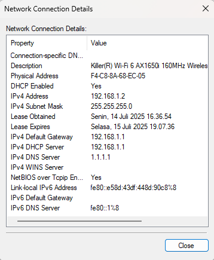

- 1Klik simbol pencarian 🔍 di taskbar Windows.
- 2Ketik Control Panel lalu klik Open.
- 3Klik Network and Internet → Network and Sharing Center → Change adapter settings.
Melihat Informasi Konfigurasi Alamat IP
- 1Klik kanan Ethernet → Status → Details...

Merubah Konfigurasi Alamat IP
- 1Klik kanan Ethernet → Properties.
- 2Klik 2x pada Internet Protocol Version 4 (TCP/IPv4).
- 3Terdapat masing-masing 2 pilihan konfigurasi IP address & DNS Server (lihat penjelasan di bawah).
💡 Obtain an IP Address Automatically: mengatur alamat IP secara otomatis.
Use the following IP address: mengatur alamat IP secara manual — isikan IP Address, Subnet mask & Default gateway.
Obtain DNS Server Address Automatically: mengatur alamat DNS Server secara otomatis.
Use the following DNS Server addresses: mengatur alamat DNS Server secara manual — isikan Preferred DNS Server & Alternate DNS Server.
Use the following IP address: mengatur alamat IP secara manual — isikan IP Address, Subnet mask & Default gateway.
Obtain DNS Server Address Automatically: mengatur alamat DNS Server secara otomatis.
Use the following DNS Server addresses: mengatur alamat DNS Server secara manual — isikan Preferred DNS Server & Alternate DNS Server.
Pengujian Koneksi Jaringan
- 1Klik simbol pencarian 🔍 di taskbar Windows.
- 2Ketik CMD atau Command Prompt lalu klik Open.
- 3Uji koneksi jaringan menggunakan perintah ping dengan format:
ping [alamat tujuan]. - 4Tekan Enter.
Command Prompt
# Pengujian ke alamat web ping google.com # Pengujian ke perangkat jaringan (PC, Router, dll) ping 192.168.10.1